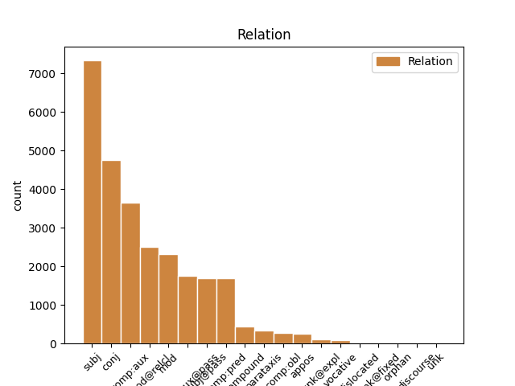
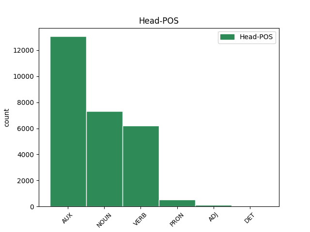
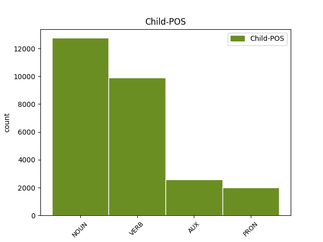

Distribution of features within this leaf



Agreement Rules sorted by frequency.
- When the dependent token is the subject(subj) of the head token, and the dependent token is NOUN.
1 Gli _ _ _ _ 0 _ _ _
2 edifici edificio NOUN S Gender=Masc|Number=Plur 7 subj _ _
3 di _ _ _ _ 0 _ _ _
4 il _ _ _ _ 0 _ _ _
5 centro _ _ _ _ 0 _ _ _
6 storico _ _ _ _ 0 _ _ _
7 erano essere AUX VA Mood=Ind|Number=Plur|Person=3|Tense=Imp|VerbForm=Fin 0 _ _ _
8 costruiti _ _ _ _ 0 _ _ _
9 con _ _ _ _ 0 _ _ _
10 l’ _ _ _ _ 0 _ _ _
11 argilla _ _ _ _ 0 _ _ _
12 rossa _ _ _ _ 0 _ _ _
13 di _ _ _ _ 0 _ _ _
14 il _ _ _ _ 0 _ _ _
15 deserto _ _ _ _ 0 _ _ _
16 , _ _ _ _ 0 _ _ _
17 un _ _ _ _ 0 _ _ _
18 materiale _ _ _ _ 0 _ _ _
19 molto _ _ _ _ 0 _ _ _
20 fragile _ _ _ _ 0 _ _ _
21 . _ _ _ _ 0 _ _ _
1 Mohammad _ _ _ _ 0 _ _ _
2 Khatami _ _ _ _ 0 _ _ _
3 , _ _ _ _ 0 _ _ _
4 il _ _ _ _ 0 _ _ _
5 presidente _ _ _ _ 0 _ _ _
6 di _ _ _ _ 0 _ _ _
7 l’ _ _ _ _ 0 _ _ _
8 Iran _ _ _ _ 0 _ _ _
9 , _ _ _ _ 0 _ _ _
10 si _ _ _ _ 0 _ _ _
11 è essere AUX VA Mood=Ind|Number=Sing|Person=3|Tense=Pres|VerbForm=Fin 0 _ _ _
12 impegnato impegnare VERB V Gender=Masc|Number=Sing|Tense=Past|VerbForm=Part 11 comp:aux _ _
13 a _ _ _ _ 0 _ _ _
14 ricostruire _ _ _ _ 0 _ _ _
15 il _ _ _ _ 0 _ _ _
16 centro _ _ _ _ 0 _ _ _
17 di _ _ _ _ 0 _ _ _
18 la _ _ _ _ 0 _ _ _
19 città _ _ _ _ 0 _ _ _
20 di _ _ _ _ 0 _ _ _
21 Bam _ _ _ _ 0 _ _ _
22 entro _ _ _ _ 0 _ _ _
23 2 _ _ _ _ 0 _ _ _
24 anni _ _ _ _ 0 _ _ _
25 . _ _ _ _ 0 _ _ _
1 Quando _ _ _ _ 0 _ _ _
2 il _ _ _ _ 0 _ _ _
3 terremoto _ _ _ _ 0 _ _ _
4 è _ _ _ _ 0 _ _ _
5 forte _ _ _ _ 0 _ _ _
6 , _ _ _ _ 0 _ _ _
7 si _ _ _ _ 0 _ _ _
8 rovinano _ _ _ _ 0 _ _ _
9 o _ _ _ _ 0 _ _ _
10 crollano _ _ _ _ 0 _ _ _
11 anche _ _ _ _ 0 _ _ _
12 le _ _ _ _ 0 _ _ _
13 case casa NOUN S Gender=Fem|Number=Plur 0 _ _ _
14 e _ _ _ _ 0 _ _ _
15 i _ _ _ _ 0 _ _ _
16 palazzi palazzo NOUN S Gender=Masc|Number=Plur 13 conj _ SpaceAfter=No
17 . _ _ _ _ 0 _ _ _
1 Quando _ _ _ _ 0 _ _ _
2 c’ _ _ _ _ 0 _ _ _
3 è essere VERB V Mood=Ind|Number=Sing|Person=3|Tense=Pres|VerbForm=Fin 8 mod _ _
4 il _ _ _ _ 0 _ _ _
5 terremoto _ _ _ _ 0 _ _ _
6 la _ _ _ _ 0 _ _ _
7 terra _ _ _ _ 0 _ _ _
8 trema tremare VERB V Mood=Ind|Number=Sing|Person=3|Tense=Pres|VerbForm=Fin 0 _ _ _
9 e _ _ _ _ 0 _ _ _
10 si _ _ _ _ 0 _ _ _
11 muove _ _ _ _ 0 _ _ _
12 . _ _ _ _ 0 _ _ _
1 Durante _ _ _ _ 0 _ _ _
2 il _ _ _ _ 0 _ _ _
3 terremoto _ _ _ _ 0 _ _ _
4 in _ _ _ _ 0 _ _ _
5 Iran _ _ _ _ 0 _ _ _
6 , _ _ _ _ 0 _ _ _
7 sono _ _ _ _ 0 _ _ _
8 morte _ _ _ _ 0 _ _ _
9 moltissime _ _ _ _ 0 _ _ _
10 persone _ _ _ _ 0 _ _ _
11 e _ _ _ _ 0 _ _ _
12 il _ _ _ _ 0 _ _ _
13 centro _ _ _ _ 0 _ _ _
14 storico _ _ _ _ 0 _ _ _
15 di _ _ _ _ 0 _ _ _
16 la _ _ _ _ 0 _ _ _
17 città _ _ _ _ 0 _ _ _
18 di _ _ _ _ 0 _ _ _
19 Bam _ _ _ _ 0 _ _ _
20 è _ _ _ _ 0 _ _ _
21 stato essere AUX VA Gender=Masc|Number=Sing|Tense=Past|VerbForm=Part 0 _ _ _
22 completamente _ _ _ _ 0 _ _ _
23 distrutto distruggere VERB V Gender=Masc|Number=Sing|Tense=Past|VerbForm=Part 21 comp:aux@pass _ SpaceAfter=No
24 . _ _ _ _ 0 _ _ _
1 Durante _ _ _ _ 0 _ _ _
2 il _ _ _ _ 0 _ _ _
3 terremoto _ _ _ _ 0 _ _ _
4 in _ _ _ _ 0 _ _ _
5 Iran _ _ _ _ 0 _ _ _
6 , _ _ _ _ 0 _ _ _
7 sono _ _ _ _ 0 _ _ _
8 morte _ _ _ _ 0 _ _ _
9 moltissime _ _ _ _ 0 _ _ _
10 persone _ _ _ _ 0 _ _ _
11 e _ _ _ _ 0 _ _ _
12 il _ _ _ _ 0 _ _ _
13 centro centro NOUN S Gender=Masc|Number=Sing 20 subj@pass _ _
14 storico _ _ _ _ 0 _ _ _
15 di _ _ _ _ 0 _ _ _
16 la _ _ _ _ 0 _ _ _
17 città _ _ _ _ 0 _ _ _
18 di _ _ _ _ 0 _ _ _
19 Bam _ _ _ _ 0 _ _ _
20 è essere AUX VA Mood=Ind|Number=Sing|Person=3|Tense=Pres|VerbForm=Fin 0 _ _ _
21 stato _ _ _ _ 0 _ _ _
22 completamente _ _ _ _ 0 _ _ _
23 distrutto _ _ _ _ 0 _ _ _
24 . _ _ _ _ 0 _ _ _
1 Su _ _ _ _ 0 _ _ _
2 le _ _ _ _ 0 _ _ _
3 barche _ _ _ _ 0 _ _ _
4 i _ _ _ _ 0 _ _ _
5 turisti _ _ _ _ 0 _ _ _
6 possono _ _ _ _ 0 _ _ _
7 ascoltare _ _ _ _ 0 _ _ _
8 la _ _ _ _ 0 _ _ _
9 descrizione _ _ _ _ 0 _ _ _
10 e _ _ _ _ 0 _ _ _
11 la _ _ _ _ 0 _ _ _
12 storia _ _ _ _ 0 _ _ _
13 di _ _ _ _ 0 _ _ _
14 i _ _ _ _ 0 _ _ _
15 monumenti monumento NOUN S Gender=Masc|Number=Plur 0 _ _ _
16 che _ _ _ _ 0 _ _ _
17 si _ _ _ _ 0 _ _ _
18 vedono vedere VERB V Mood=Ind|Number=Plur|Person=3|Tense=Pres|VerbForm=Fin 15 mod@relcl _ _
19 da _ _ _ _ 0 _ _ _
20 il _ _ _ _ 0 _ _ _
21 fiume _ _ _ _ 0 _ _ _
22 . _ _ _ _ 0 _ _ _
1 Quando _ _ _ _ 0 _ _ _
2 il _ _ _ _ 0 _ _ _
3 terremoto _ _ _ _ 0 _ _ _
4 è _ _ _ _ 0 _ _ _
5 forte _ _ _ _ 0 _ _ _
6 , _ _ _ _ 0 _ _ _
7 si _ _ _ _ 0 _ _ _
8 rovinano rovinare VERB V Mood=Ind|Number=Plur|Person=3|Tense=Pres|VerbForm=Fin 0 _ _ _
9 o _ _ _ _ 0 _ _ _
10 crollano crollare VERB V Mood=Ind|Number=Plur|Person=3|Tense=Pres|VerbForm=Fin 8 conj _ _
11 anche _ _ _ _ 0 _ _ _
12 le _ _ _ _ 0 _ _ _
13 case _ _ _ _ 0 _ _ _
14 e _ _ _ _ 0 _ _ _
15 i _ _ _ _ 0 _ _ _
16 palazzi _ _ _ _ 0 _ _ _
17 . _ _ _ _ 0 _ _ _
1 Il _ _ _ _ 0 _ _ _
2 centro _ _ _ _ 0 _ _ _
3 storico _ _ _ _ 0 _ _ _
4 era _ _ _ _ 0 _ _ _
5 la _ _ _ _ 0 _ _ _
6 parte _ _ _ _ 0 _ _ _
7 più _ _ _ _ 0 _ _ _
8 antica _ _ _ _ 0 _ _ _
9 di _ _ _ _ 0 _ _ _
10 Bam _ _ _ _ 0 _ _ _
11 che _ _ _ _ 0 _ _ _
12 era essere AUX V Mood=Ind|Number=Sing|Person=3|Tense=Imp|VerbForm=Fin 0 _ _ _
13 patrimonio patrimonio NOUN S Gender=Masc|Number=Sing 12 comp:pred _ _
14 artistico _ _ _ _ 0 _ _ _
15 di _ _ _ _ 0 _ _ _
16 tutta _ _ _ _ 0 _ _ _
17 l’ _ _ _ _ 0 _ _ _
18 umanità _ _ _ _ 0 _ _ _
19 . _ _ _ _ 0 _ _ _
1 Il _ _ _ _ 0 _ _ _
2 titolo _ _ _ _ 0 _ _ _
3 di _ _ _ _ 0 _ _ _
4 la _ _ _ _ 0 _ _ _
5 canzone _ _ _ _ 0 _ _ _
6 che _ _ _ _ 0 _ _ _
7 Luciano _ _ _ _ 0 _ _ _
8 Ligabue _ _ _ _ 0 _ _ _
9 ha _ _ _ _ 0 _ _ _
10 composto _ _ _ _ 0 _ _ _
11 per _ _ _ _ 0 _ _ _
12 il _ _ _ _ 0 _ _ _
13 film _ _ _ _ 0 _ _ _
14 Da _ _ _ _ 0 _ _ _
15 zero _ _ _ _ 0 _ _ _
16 a _ _ _ _ 0 _ _ _
17 dieci _ _ _ _ 0 _ _ _
18 è _ _ _ _ 0 _ _ _
19 : _ _ _ _ 0 _ _ _
20 Questa questa PRON PD Gender=Fem|Number=Sing|PronType=Dem 21 subj _ _
21 è essere AUX V Mood=Ind|Number=Sing|Person=3|Tense=Pres|VerbForm=Fin 0 _ _ _
22 la _ _ _ _ 0 _ _ _
23 mia _ _ _ _ 0 _ _ _
24 vita _ _ _ _ 0 _ _ _
25 . _ _ _ _ 0 _ _ _
1 Il _ _ _ _ 0 _ _ _
2 centro _ _ _ _ 0 _ _ _
3 storico _ _ _ _ 0 _ _ _
4 era _ _ _ _ 0 _ _ _
5 la _ _ _ _ 0 _ _ _
6 parte parte NOUN S Gender=Fem|Number=Sing 0 _ _ _
7 più _ _ _ _ 0 _ _ _
8 antica _ _ _ _ 0 _ _ _
9 di _ _ _ _ 0 _ _ _
10 Bam _ _ _ _ 0 _ _ _
11 che _ _ _ _ 0 _ _ _
12 era essere AUX V Mood=Ind|Number=Sing|Person=3|Tense=Imp|VerbForm=Fin 6 mod@relcl _ _
13 patrimonio _ _ _ _ 0 _ _ _
14 artistico _ _ _ _ 0 _ _ _
15 di _ _ _ _ 0 _ _ _
16 tutta _ _ _ _ 0 _ _ _
17 l’ _ _ _ _ 0 _ _ _
18 umanità _ _ _ _ 0 _ _ _
19 . _ _ _ _ 0 _ _ _
1 Aneli _ _ _ _ 0 _ _ _
2 Jaatteenmaki _ _ _ _ 0 _ _ _
3 ha avere VERB V Mood=Ind|Number=Sing|Person=3|Tense=Pres|VerbForm=Fin 0 _ _ _
4 quarantotto _ _ _ _ 0 _ _ _
5 anni _ _ _ _ 0 _ _ _
6 ed _ _ _ _ 0 _ _ _
7 è essere AUX V Mood=Ind|Number=Sing|Person=3|Tense=Pres|VerbForm=Fin 3 conj _ _
8 il _ _ _ _ 0 _ _ _
9 capo _ _ _ _ 0 _ _ _
10 di _ _ _ _ 0 _ _ _
11 il _ _ _ _ 0 _ _ _
12 Partito _ _ _ _ 0 _ _ _
13 di _ _ _ _ 0 _ _ _
14 centro _ _ _ _ 0 _ _ _
15 . _ _ _ _ 0 _ _ _
1 Durante _ _ _ _ 0 _ _ _
2 il _ _ _ _ 0 _ _ _
3 terremoto _ _ _ _ 0 _ _ _
4 in _ _ _ _ 0 _ _ _
5 Iran _ _ _ _ 0 _ _ _
6 , _ _ _ _ 0 _ _ _
7 sono _ _ _ _ 0 _ _ _
8 morte _ _ _ _ 0 _ _ _
9 moltissime _ _ _ _ 0 _ _ _
10 persone _ _ _ _ 0 _ _ _
11 e _ _ _ _ 0 _ _ _
12 il _ _ _ _ 0 _ _ _
13 centro _ _ _ _ 0 _ _ _
14 storico _ _ _ _ 0 _ _ _
15 di _ _ _ _ 0 _ _ _
16 la _ _ _ _ 0 _ _ _
17 città _ _ _ _ 0 _ _ _
18 di _ _ _ _ 0 _ _ _
19 Bam _ _ _ _ 0 _ _ _
20 è essere AUX VA Mood=Ind|Number=Sing|Person=3|Tense=Pres|VerbForm=Fin 0 _ _ _
21 stato essere AUX VA Gender=Masc|Number=Sing|Tense=Past|VerbForm=Part 20 comp:aux _ _
22 completamente _ _ _ _ 0 _ _ _
23 distrutto _ _ _ _ 0 _ _ _
24 . _ _ _ _ 0 _ _ _
1 In _ _ _ _ 0 _ _ _
2 gli _ _ _ _ 0 _ _ _
3 anni _ _ _ _ 0 _ _ _
4 Ottanta _ _ _ _ 0 _ _ _
5 è _ _ _ _ 0 _ _ _
6 diventato diventare VERB V Gender=Masc|Number=Sing|Tense=Past|VerbForm=Part 0 _ _ _
7 uno uno PRON PI Gender=Masc|Number=Sing|PronType=Ind 6 comp:pred _ _
8 di _ _ _ _ 0 _ _ _
9 i _ _ _ _ 0 _ _ _
10 generi _ _ _ _ 0 _ _ _
11 di _ _ _ _ 0 _ _ _
12 musica _ _ _ _ 0 _ _ _
13 preferita _ _ _ _ 0 _ _ _
14 da _ _ _ _ 0 _ _ _
15 i _ _ _ _ 0 _ _ _
16 giovani _ _ _ _ 0 _ _ _
17 . _ _ _ _ 0 _ _ _
1 I _ _ _ _ 0 _ _ _
2 ricercatori _ _ _ _ 0 _ _ _
3 di _ _ _ _ 0 _ _ _
4 il _ _ _ _ 0 _ _ _
5 Censis _ _ _ _ 0 _ _ _
6 , _ _ _ _ 0 _ _ _
7 Centro _ _ _ _ 0 _ _ _
8 Studi studio NOUN S Gender=Masc|Number=Plur 0 _ _ _
9 Investimenti investimento NOUN S Gender=Masc|Number=Plur 8 compound _ _
10 Sociali _ _ _ _ 0 _ _ _
11 , _ _ _ _ 0 _ _ _
12 hanno _ _ _ _ 0 _ _ _
13 presentato _ _ _ _ 0 _ _ _
14 un _ _ _ _ 0 _ _ _
15 rapporto _ _ _ _ 0 _ _ _
16 su _ _ _ _ 0 _ _ _
17 le _ _ _ _ 0 _ _ _
18 condizioni _ _ _ _ 0 _ _ _
19 di _ _ _ _ 0 _ _ _
20 vita _ _ _ _ 0 _ _ _
21 di _ _ _ _ 0 _ _ _
22 la _ _ _ _ 0 _ _ _
23 popolazione _ _ _ _ 0 _ _ _
24 italiana _ _ _ _ 0 _ _ _
25 in _ _ _ _ 0 _ _ _
26 il _ _ _ _ 0 _ _ _
27 2003 _ _ _ _ 0 _ _ _
28 . _ _ _ _ 0 _ _ _
1 Gli _ _ _ _ 0 _ _ _
2 edifici _ _ _ _ 0 _ _ _
3 di _ _ _ _ 0 _ _ _
4 il _ _ _ _ 0 _ _ _
5 centro _ _ _ _ 0 _ _ _
6 storico _ _ _ _ 0 _ _ _
7 erano _ _ _ _ 0 _ _ _
8 costruiti _ _ _ _ 0 _ _ _
9 con _ _ _ _ 0 _ _ _
10 l’ _ _ _ _ 0 _ _ _
11 argilla argilla NOUN S Gender=Fem|Number=Sing 0 _ _ _
12 rossa _ _ _ _ 0 _ _ _
13 di _ _ _ _ 0 _ _ _
14 il _ _ _ _ 0 _ _ _
15 deserto _ _ _ _ 0 _ _ _
16 , _ _ _ _ 0 _ _ _
17 un _ _ _ _ 0 _ _ _
18 materiale materiale NOUN S Gender=Masc|Number=Sing 11 appos _ _
19 molto _ _ _ _ 0 _ _ _
20 fragile _ _ _ _ 0 _ _ _
21 . _ _ _ _ 0 _ _ _
1 Il _ _ _ _ 0 _ _ _
2 riso riso NOUN S Gender=Masc|Number=Sing 0 _ _ _
3 brillato _ _ _ _ 0 _ _ _
4 , _ _ _ _ 0 _ _ _
5 cioè _ _ _ _ 0 _ _ _
6 il _ _ _ _ 0 _ _ _
7 riso riso NOUN S Gender=Masc|Number=Sing 2 mod _ _
8 senza _ _ _ _ 0 _ _ _
9 la _ _ _ _ 0 _ _ _
10 buccia _ _ _ _ 0 _ _ _
11 , _ _ _ _ 0 _ _ _
12 è _ _ _ _ 0 _ _ _
13 molto _ _ _ _ 0 _ _ _
14 digeribile _ _ _ _ 0 _ _ _
15 . _ _ _ _ 0 _ _ _
1 Inoltre _ _ _ _ 0 _ _ _
2 dobbiamo _ _ _ _ 0 _ _ _
3 comprare _ _ _ _ 0 _ _ _
4 i _ _ _ _ 0 _ _ _
5 colori _ _ _ _ 0 _ _ _
6 che _ _ _ _ 0 _ _ _
7 ci ci PRON PC Clitic=Yes|Number=Plur|Person=1|PronType=Prs 8 comp:obl _ _
8 piacciono piacere VERB V Mood=Ind|Number=Plur|Person=3|Tense=Pres|VerbForm=Fin 0 _ _ _
9 di _ _ _ _ 0 _ _ _
10 più _ _ _ _ 0 _ _ _
11 per _ _ _ _ 0 _ _ _
12 stampare _ _ _ _ 0 _ _ _
13 e _ _ _ _ 0 _ _ _
14 dipingere _ _ _ _ 0 _ _ _
15 le _ _ _ _ 0 _ _ _
16 stoffe _ _ _ _ 0 _ _ _
17 . _ _ _ _ 0 _ _ _
1 Trito tritare VERB V Mood=Ind|Number=Sing|Person=1|Tense=Pres|VerbForm=Fin 0 _ _ _
2 insieme _ _ _ _ 0 _ _ _
3 il _ _ _ _ 0 _ _ _
4 sedano _ _ _ _ 0 _ _ _
5 , _ _ _ _ 0 _ _ _
6 la _ _ _ _ 0 _ _ _
7 cipolla _ _ _ _ 0 _ _ _
8 , _ _ _ _ 0 _ _ _
9 le _ _ _ _ 0 _ _ _
10 carote _ _ _ _ 0 _ _ _
11 ; _ _ _ _ 0 _ _ _
12 li _ _ _ _ 0 _ _ _
13 metto mettere VERB V Mood=Ind|Number=Sing|Person=1|Tense=Pres|VerbForm=Fin 1 parataxis _ _
14 in _ _ _ _ 0 _ _ _
15 un _ _ _ _ 0 _ _ _
16 tegame _ _ _ _ 0 _ _ _
17 con _ _ _ _ 0 _ _ _
18 l' _ _ _ _ 0 _ _ _
19 olio _ _ _ _ 0 _ _ _
20 extravergine _ _ _ _ 0 _ _ _
21 di _ _ _ _ 0 _ _ _
22 oliva _ _ _ _ 0 _ _ _
23 e _ _ _ _ 0 _ _ _
24 lascio _ _ _ _ 0 _ _ _
25 soffriggere _ _ _ _ 0 _ _ _
26 per _ _ _ _ 0 _ _ _
27 5 _ _ _ _ 0 _ _ _
28 minuti _ _ _ _ 0 _ _ _
29 . _ _ _ _ 0 _ _ _
1 Benvenuti _ _ _ _ 0 _ _ _
2 quindi _ _ _ _ 0 _ _ _
3 in _ _ _ _ 0 _ _ _
4 l' _ _ _ _ 0 _ _ _
5 economia _ _ _ _ 0 _ _ _
6 virtuale _ _ _ _ 0 _ _ _
7 di _ _ _ _ 0 _ _ _
8 le _ _ _ _ 0 _ _ _
9 fabbriche _ _ _ _ 0 _ _ _
10 che _ _ _ _ 0 _ _ _
11 sfruttano _ _ _ _ 0 _ _ _
12 i _ _ _ _ 0 _ _ _
13 lavoratori _ _ _ _ 0 _ _ _
14 , _ _ _ _ 0 _ _ _
15 a _ _ _ _ 0 _ _ _
16 l' _ _ _ _ 0 _ _ _
17 interno _ _ _ _ 0 _ _ _
18 di _ _ _ _ 0 _ _ _
19 la _ _ _ _ 0 _ _ _
20 quale _ _ _ _ 0 _ _ _
21 molti molto PRON PI Gender=Masc|Number=Plur|PronType=Ind 24 subj@pass _ _
22 di _ _ _ _ 0 _ _ _
23 noi _ _ _ _ 0 _ _ _
24 sono essere AUX VA Mood=Ind|Number=Plur|Person=3|Tense=Pres|VerbForm=Fin 0 _ _ _
25 inchiodati _ _ _ _ 0 _ _ _
26 a _ _ _ _ 0 _ _ _
27 le _ _ _ _ 0 _ _ _
28 scrivanie _ _ _ _ 0 _ _ _
29 e _ _ _ _ 0 _ _ _
30 a _ _ _ _ 0 _ _ _
31 gli _ _ _ _ 0 _ _ _
32 schermi _ _ _ _ 0 _ _ _
33 ; _ _ _ _ 0 _ _ _
1 Ci ci PRON PC Clitic=Yes|Number=Plur|Person=1|PronType=Prs 2 unk@expl _ _
2 sono essere VERB V Mood=Ind|Number=Plur|Person=3|Tense=Pres|VerbForm=Fin 0 _ _ _
3 squadre _ _ _ _ 0 _ _ _
4 nazionali _ _ _ _ 0 _ _ _
5 europee _ _ _ _ 0 _ _ _
6 , _ _ _ _ 0 _ _ _
7 americane _ _ _ _ 0 _ _ _
8 , _ _ _ _ 0 _ _ _
9 asiatiche _ _ _ _ 0 _ _ _
10 , _ _ _ _ 0 _ _ _
11 africane _ _ _ _ 0 _ _ _
12 e _ _ _ _ 0 _ _ _
13 una _ _ _ _ 0 _ _ _
14 squadra _ _ _ _ 0 _ _ _
15 nazionale _ _ _ _ 0 _ _ _
16 oceanica _ _ _ _ 0 _ _ _
17 : _ _ _ _ 0 _ _ _
18 l’ _ _ _ _ 0 _ _ _
19 Australia _ _ _ _ 0 _ _ _
20 . _ _ _ _ 0 _ _ _
1 Molti _ _ _ _ 0 _ _ _
2 bambini _ _ _ _ 0 _ _ _
3 e _ _ _ _ 0 _ _ _
4 bambine _ _ _ _ 0 _ _ _
5 brasiliani _ _ _ _ 0 _ _ _
6 vivono vivere VERB V Mood=Ind|Number=Plur|Person=3|Tense=Pres|VerbForm=Fin 0 _ _ _
7 abbandonati abbandonare VERB V Gender=Masc|Number=Plur|Tense=Past|VerbForm=Part 6 comp:pred _ _
8 per _ _ _ _ 0 _ _ _
9 le _ _ _ _ 0 _ _ _
10 strade _ _ _ _ 0 _ _ _
11 e _ _ _ _ 0 _ _ _
12 non _ _ _ _ 0 _ _ _
13 vanno _ _ _ _ 0 _ _ _
14 a _ _ _ _ 0 _ _ _
15 scuola _ _ _ _ 0 _ _ _
16 . _ _ _ _ 0 _ _ _
1 Prima _ _ _ _ 0 _ _ _
2 , _ _ _ _ 0 _ _ _
3 le _ _ _ _ 0 _ _ _
4 squadre _ _ _ _ 0 _ _ _
5 con _ _ _ _ 0 _ _ _
6 più _ _ _ _ 0 _ _ _
7 soldi _ _ _ _ 0 _ _ _
8 costruivano _ _ _ _ 0 _ _ _
9 e _ _ _ _ 0 _ _ _
10 usavano _ _ _ _ 0 _ _ _
11 due _ _ _ _ 0 _ _ _
12 motori _ _ _ _ 0 _ _ _
13 , _ _ _ _ 0 _ _ _
14 uno uno PRON PI Gender=Masc|Number=Sing|PronType=Ind 0 _ _ _
15 per _ _ _ _ 0 _ _ _
16 il _ _ _ _ 0 _ _ _
17 giro _ _ _ _ 0 _ _ _
18 di _ _ _ _ 0 _ _ _
19 qualifica _ _ _ _ 0 _ _ _
20 e _ _ _ _ 0 _ _ _
21 uno uno PRON PI Gender=Masc|Number=Sing|PronType=Ind 14 conj _ _
22 per _ _ _ _ 0 _ _ _
23 la _ _ _ _ 0 _ _ _
24 gara _ _ _ _ 0 _ _ _
25 . _ _ _ _ 0 _ _ _
1 Perciò _ _ _ _ 0 _ _ _
2 , _ _ _ _ 0 _ _ _
3 tutti _ _ _ _ 0 _ _ _
4 i _ _ _ _ 0 _ _ _
5 Paesi paese NOUN S Gender=Masc|Number=Plur 0 _ _ _
6 di _ _ _ _ 0 _ _ _
7 il _ _ _ _ 0 _ _ _
8 mondo _ _ _ _ 0 _ _ _
9 , _ _ _ _ 0 _ _ _
10 specialmente _ _ _ _ 0 _ _ _
11 quelli quello PRON PD Gender=Masc|Number=Plur|PronType=Dem 5 mod _ _
12 più _ _ _ _ 0 _ _ _
13 ricchi _ _ _ _ 0 _ _ _
14 , _ _ _ _ 0 _ _ _
15 devono _ _ _ _ 0 _ _ _
16 impegnar _ _ _ _ 0 _ _ _
17 si _ _ _ _ 0 _ _ _
18 di _ _ _ _ 0 _ _ _
19 più _ _ _ _ 0 _ _ _
20 per _ _ _ _ 0 _ _ _
21 migliorare _ _ _ _ 0 _ _ _
22 le _ _ _ _ 0 _ _ _
23 condizioni _ _ _ _ 0 _ _ _
24 di _ _ _ _ 0 _ _ _
25 vita _ _ _ _ 0 _ _ _
26 di _ _ _ _ 0 _ _ _
27 tutti _ _ _ _ 0 _ _ _
28 i _ _ _ _ 0 _ _ _
29 bambini _ _ _ _ 0 _ _ _
30 . _ _ _ _ 0 _ _ _
1 Signor signore NOUN S Gender=Masc|Number=Sing 13 vocative _ _
2 presidente _ _ _ _ 0 _ _ _
3 , _ _ _ _ 0 _ _ _
4 la _ _ _ _ 0 _ _ _
5 priorità _ _ _ _ 0 _ _ _
6 attribuita _ _ _ _ 0 _ _ _
7 a _ _ _ _ 0 _ _ _
8 i _ _ _ _ 0 _ _ _
9 criteri _ _ _ _ 0 _ _ _
10 finanziari _ _ _ _ 0 _ _ _
11 e _ _ _ _ 0 _ _ _
12 monetari _ _ _ _ 0 _ _ _
13 rafforza rafforzare VERB V Mood=Ind|Number=Sing|Person=3|Tense=Pres|VerbForm=Fin 0 _ _ _
14 il _ _ _ _ 0 _ _ _
15 dilagare _ _ _ _ 0 _ _ _
16 di _ _ _ _ 0 _ _ _
17 le _ _ _ _ 0 _ _ _
18 ineguaglianze _ _ _ _ 0 _ _ _
19 di _ _ _ _ 0 _ _ _
20 ogni _ _ _ _ 0 _ _ _
21 genere _ _ _ _ 0 _ _ _
22 . _ _ _ _ 0 _ _ _
1 Paolo _ _ _ _ 0 _ _ _
2 Conte _ _ _ _ 0 _ _ _
3 ama amare VERB V Mood=Ind|Number=Sing|Person=3|Tense=Pres|VerbForm=Fin 0 _ _ _
4 il _ _ _ _ 0 _ _ _
5 jazz _ _ _ _ 0 _ _ _
6 classico _ _ _ _ 0 _ _ _
7 americano _ _ _ _ 0 _ _ _
8 da _ _ _ _ 0 _ _ _
9 quando _ _ _ _ 0 _ _ _
10 era essere AUX V Mood=Ind|Number=Sing|Person=3|Tense=Imp|VerbForm=Fin 3 mod _ _
11 ragazzo _ _ _ _ 0 _ _ _
12 . _ _ _ _ 0 _ _ _
1 In _ _ _ _ 0 _ _ _
2 l’ _ _ _ _ 0 _ _ _
3 Assemblea _ _ _ _ 0 _ _ _
4 Costituente _ _ _ _ 0 _ _ _
5 sono essere AUX VA Mood=Ind|Number=Plur|Person=3|Tense=Pres|VerbForm=Fin 0 _ _ _
6 state _ _ _ _ 0 _ _ _
7 elette _ _ _ _ 0 _ _ _
8 556 _ _ _ _ 0 _ _ _
9 persone _ _ _ _ 0 _ _ _
10 : _ _ _ _ 0 _ _ _
11 21 _ _ _ _ 0 _ _ _
12 di _ _ _ _ 0 _ _ _
13 queste _ _ _ _ 0 _ _ _
14 persone _ _ _ _ 0 _ _ _
15 erano essere AUX V Mood=Ind|Number=Plur|Person=3|Tense=Imp|VerbForm=Fin 5 parataxis _ _
16 donne _ _ _ _ 0 _ _ _
17 . _ _ _ _ 0 _ _ _
1 Ogni _ _ _ _ 0 _ _ _
2 cliente _ _ _ _ 0 _ _ _
3 potenziale _ _ _ _ 0 _ _ _
4 è essere AUX VA Mood=Ind|Number=Sing|Person=3|Tense=Pres|VerbForm=Fin 0 _ _ _
5 stato essere AUX VA Gender=Masc|Number=Sing|Tense=Past|VerbForm=Part 4 comp:aux@pass _ _
6 ottenuto _ _ _ _ 0 _ _ _
7 con _ _ _ _ 0 _ _ _
8 una _ _ _ _ 0 _ _ _
9 spesa _ _ _ _ 0 _ _ _
10 di _ _ _ _ 0 _ _ _
11 10,25 _ _ _ _ 0 _ _ _
12 dollari _ _ _ _ 0 _ _ _
13 , _ _ _ _ 0 _ _ _
14 a _ _ _ _ 0 _ _ _
15 partire _ _ _ _ 0 _ _ _
16 da _ _ _ _ 0 _ _ _
17 un _ _ _ _ 0 _ _ _
18 Cpc _ _ _ _ 0 _ _ _
19 di _ _ _ _ 0 _ _ _
20 1,25 _ _ _ _ 0 _ _ _
21 dollari _ _ _ _ 0 _ _ _
22 . _ _ _ _ 0 _ _ _
1 Alcuni _ _ _ _ 0 _ _ _
2 inquinanti inquinante NOUN S Gender=Masc|Number=Plur 4 dislocated _ _
3 li _ _ _ _ 0 _ _ _
4 abbiamo avere AUX VA Mood=Ind|Number=Plur|Person=1|Tense=Pres|VerbForm=Fin 0 _ _ _
5 creati _ _ _ _ 0 _ _ _
6 noi _ _ _ _ 0 _ _ _
7 , _ _ _ _ 0 _ _ _
8 molecole _ _ _ _ 0 _ _ _
9 come _ _ _ _ 0 _ _ _
10 i _ _ _ _ 0 _ _ _
11 PCB _ _ _ _ 0 _ _ _
12 , _ _ _ _ 0 _ _ _
13 che _ _ _ _ 0 _ _ _
14 il _ _ _ _ 0 _ _ _
15 nostro _ _ _ _ 0 _ _ _
16 organismo _ _ _ _ 0 _ _ _
17 non _ _ _ _ 0 _ _ _
18 riesce _ _ _ _ 0 _ _ _
19 a _ _ _ _ 0 _ _ _
20 scindere _ _ _ _ 0 _ _ _
21 , _ _ _ _ 0 _ _ _
22 e _ _ _ _ 0 _ _ _
23 che _ _ _ _ 0 _ _ _
24 finiscono _ _ _ _ 0 _ _ _
25 a _ _ _ _ 0 _ _ _
26 la _ _ _ _ 0 _ _ _
27 base _ _ _ _ 0 _ _ _
28 di _ _ _ _ 0 _ _ _
29 quella _ _ _ _ 0 _ _ _
30 piramide _ _ _ _ 0 _ _ _
31 , _ _ _ _ 0 _ _ _
32 e _ _ _ _ 0 _ _ _
33 risalgono _ _ _ _ 0 _ _ _
34 , _ _ _ _ 0 _ _ _
35 e _ _ _ _ 0 _ _ _
36 in _ _ _ _ 0 _ _ _
37 quel _ _ _ _ 0 _ _ _
38 modo _ _ _ _ 0 _ _ _
39 vengono _ _ _ _ 0 _ _ _
40 passati _ _ _ _ 0 _ _ _
41 verso _ _ _ _ 0 _ _ _
42 l' _ _ _ _ 0 _ _ _
43 alto _ _ _ _ 0 _ _ _
44 , _ _ _ _ 0 _ _ _
45 a _ _ _ _ 0 _ _ _
46 i _ _ _ _ 0 _ _ _
47 predatori _ _ _ _ 0 _ _ _
48 fino _ _ _ _ 0 _ _ _
49 a _ _ _ _ 0 _ _ _
50 i _ _ _ _ 0 _ _ _
51 predatori _ _ _ _ 0 _ _ _
52 in _ _ _ _ 0 _ _ _
53 cima _ _ _ _ 0 _ _ _
54 a _ _ _ _ 0 _ _ _
55 la _ _ _ _ 0 _ _ _
56 piramide _ _ _ _ 0 _ _ _
57 . _ _ _ _ 0 _ _ _
1 Non _ _ _ _ 0 _ _ _
2 è essere AUX V Mood=Ind|Number=Sing|Person=3|Tense=Pres|VerbForm=Fin 0 _ _ _
3 chiaro _ _ _ _ 0 _ _ _
4 per _ _ _ _ 0 _ _ _
5 quali _ _ _ _ 0 _ _ _
6 compagnie _ _ _ _ 0 _ _ _
7 teatrali _ _ _ _ 0 _ _ _
8 Shakespeare _ _ _ _ 0 _ _ _
9 scrisse scrivere VERB V Mood=Ind|Number=Sing|Person=3|Tense=Past|VerbForm=Fin 2 subj _ _
10 le _ _ _ _ 0 _ _ _
11 sue _ _ _ _ 0 _ _ _
12 prime _ _ _ _ 0 _ _ _
13 opere _ _ _ _ 0 _ _ _
14 . _ _ _ _ 0 _ _ _
1 Per _ _ _ _ 0 _ _ _
2 noi _ _ _ _ 0 _ _ _
3 , _ _ _ _ 0 _ _ _
4 nuovi _ _ _ _ 0 _ _ _
5 deputati _ _ _ _ 0 _ _ _
6 a _ _ _ _ 0 _ _ _
7 il _ _ _ _ 0 _ _ _
8 parlamento _ _ _ _ 0 _ _ _
9 , _ _ _ _ 0 _ _ _
10 questa _ _ _ _ 0 _ _ _
11 è essere AUX VA Mood=Ind|Number=Sing|Person=3|Tense=Pres|VerbForm=Fin 12 comp:pred _ _
12 stata essere AUX V Gender=Fem|Number=Sing|Tense=Past|VerbForm=Part 0 _ _ _
13 la _ _ _ _ 0 _ _ _
14 prima _ _ _ _ 0 _ _ _
15 volta _ _ _ _ 0 _ _ _
16 , _ _ _ _ 0 _ _ _
17 e _ _ _ _ 0 _ _ _
18 devo _ _ _ _ 0 _ _ _
19 ammettere _ _ _ _ 0 _ _ _
20 che _ _ _ _ 0 _ _ _
21 ho _ _ _ _ 0 _ _ _
22 seguito _ _ _ _ 0 _ _ _
23 i _ _ _ _ 0 _ _ _
24 lavori _ _ _ _ 0 _ _ _
25 con _ _ _ _ 0 _ _ _
26 estremo _ _ _ _ 0 _ _ _
27 interesse _ _ _ _ 0 _ _ _
28 . _ _ _ _ 0 _ _ _
1 Ha _ _ _ _ 0 _ _ _
2 scritto _ _ _ _ 0 _ _ _
3 molti _ _ _ _ 0 _ _ _
4 libri libro NOUN S Gender=Masc|Number=Plur 0 _ _ _
5 per _ _ _ _ 0 _ _ _
6 ragazzi _ _ _ _ 0 _ _ _
7 : _ _ _ _ 0 _ _ _
8 i _ _ _ _ 0 _ _ _
9 Racconti Racconti NOUN S Gender=Masc|Number=Plur 4 parataxis _ _
10 di _ _ _ _ 0 _ _ _
11 le _ _ _ _ 0 _ _ _
12 fate _ _ _ _ 0 _ _ _
13 di _ _ _ _ 0 _ _ _
14 il _ _ _ _ 0 _ _ _
15 1875 _ _ _ _ 0 _ _ _
16 , _ _ _ _ 0 _ _ _
17 Il _ _ _ _ 0 _ _ _
18 viaggio _ _ _ _ 0 _ _ _
19 per _ _ _ _ 0 _ _ _
20 l' _ _ _ _ 0 _ _ _
21 Italia _ _ _ _ 0 _ _ _
22 di _ _ _ _ 0 _ _ _
23 Giannettino _ _ _ _ 0 _ _ _
24 di _ _ _ _ 0 _ _ _
25 il _ _ _ _ 0 _ _ _
26 1876 _ _ _ _ 0 _ _ _
27 e _ _ _ _ 0 _ _ _
28 Minuzzolo _ _ _ _ 0 _ _ _
29 di _ _ _ _ 0 _ _ _
30 il _ _ _ _ 0 _ _ _
31 1878 _ _ _ _ 0 _ _ _
32 . _ _ _ _ 0 _ _ _
1 I _ _ _ _ 0 _ _ _
2 suoi _ _ _ _ 0 _ _ _
3 personaggi _ _ _ _ 0 _ _ _
4 diventano _ _ _ _ 0 _ _ _
5 più _ _ _ _ 0 _ _ _
6 complessi _ _ _ _ 0 _ _ _
7 e _ _ _ _ 0 _ _ _
8 teneri _ _ _ _ 0 _ _ _
9 man mano NOUN S Gender=Fem|Number=Sing 0 _ _ _
10 mano mano NOUN S Gender=Fem|Number=Sing 9 unk@fixed _ _
11 che _ _ _ _ 0 _ _ _
12 passa _ _ _ _ 0 _ _ _
13 abilmente _ _ _ _ 0 _ _ _
14 da _ _ _ _ 0 _ _ _
15 le _ _ _ _ 0 _ _ _
16 scene _ _ _ _ 0 _ _ _
17 comiche _ _ _ _ 0 _ _ _
18 a _ _ _ _ 0 _ _ _
19 quelle _ _ _ _ 0 _ _ _
20 serie _ _ _ _ 0 _ _ _
21 , _ _ _ _ 0 _ _ _
22 da _ _ _ _ 0 _ _ _
23 la _ _ _ _ 0 _ _ _
24 prosa _ _ _ _ 0 _ _ _
25 a _ _ _ _ 0 _ _ _
26 la _ _ _ _ 0 _ _ _
27 poesia _ _ _ _ 0 _ _ _
28 , _ _ _ _ 0 _ _ _
29 e _ _ _ _ 0 _ _ _
30 raggiunge _ _ _ _ 0 _ _ _
31 la _ _ _ _ 0 _ _ _
32 varietà _ _ _ _ 0 _ _ _
33 narrativa _ _ _ _ 0 _ _ _
34 di _ _ _ _ 0 _ _ _
35 il _ _ _ _ 0 _ _ _
36 suo _ _ _ _ 0 _ _ _
37 più _ _ _ _ 0 _ _ _
38 maturo _ _ _ _ 0 _ _ _
39 lavoro _ _ _ _ 0 _ _ _
40 . _ _ _ _ 0 _ _ _
1 In _ _ _ _ 0 _ _ _
2 Serbia _ _ _ _ 0 _ _ _
3 e _ _ _ _ 0 _ _ _
4 Bulgaria _ _ _ _ 0 _ _ _
5 protestano _ _ _ _ 0 _ _ _
6 contro _ _ _ _ 0 _ _ _
7 gli _ _ _ _ 0 _ _ _
8 ex _ _ _ _ 0 _ _ _
9 comunisti _ _ _ _ 0 _ _ _
10 , _ _ _ _ 0 _ _ _
11 a _ _ _ _ 0 _ _ _
12 Tirana _ _ _ _ 0 _ _ _
13 contro _ _ _ _ 0 _ _ _
14 un _ _ _ _ 0 _ _ _
15 Governo governo NOUN S Gender=Masc|Number=Sing 0 _ _ _
16 di _ _ _ _ 0 _ _ _
17 centrodestra _ _ _ _ 0 _ _ _
18 , _ _ _ _ 0 _ _ _
19 uno uno PRON PI Gender=Masc|Number=Sing|PronType=Ind 15 appos _ _
20 di _ _ _ _ 0 _ _ _
21 i _ _ _ _ 0 _ _ _
22 pochi _ _ _ _ 0 _ _ _
23 rimasti _ _ _ _ 0 _ _ _
24 a _ _ _ _ 0 _ _ _
25 il _ _ _ _ 0 _ _ _
26 potere _ _ _ _ 0 _ _ _
27 in _ _ _ _ 0 _ _ _
28 i _ _ _ _ 0 _ _ _
29 Balcani _ _ _ _ 0 _ _ _
30 dopo _ _ _ _ 0 _ _ _
31 le _ _ _ _ 0 _ _ _
32 consultazioni _ _ _ _ 0 _ _ _
33 elettorali _ _ _ _ 0 _ _ _
34 . _ _ _ _ 0 _ _ _
1 Per _ _ _ _ 0 _ _ _
2 noi _ _ _ _ 0 _ _ _
3 , _ _ _ _ 0 _ _ _
4 nuovi _ _ _ _ 0 _ _ _
5 deputati _ _ _ _ 0 _ _ _
6 a _ _ _ _ 0 _ _ _
7 il _ _ _ _ 0 _ _ _
8 parlamento _ _ _ _ 0 _ _ _
9 , _ _ _ _ 0 _ _ _
10 questa _ _ _ _ 0 _ _ _
11 è essere AUX VA Mood=Ind|Number=Sing|Person=3|Tense=Pres|VerbForm=Fin 0 _ _ _
12 stata _ _ _ _ 0 _ _ _
13 la _ _ _ _ 0 _ _ _
14 prima _ _ _ _ 0 _ _ _
15 volta volta NOUN S Gender=Fem|Number=Sing 11 comp:aux@pass _ SpaceAfter=No
16 , _ _ _ _ 0 _ _ _
17 e _ _ _ _ 0 _ _ _
18 devo _ _ _ _ 0 _ _ _
19 ammettere _ _ _ _ 0 _ _ _
20 che _ _ _ _ 0 _ _ _
21 ho _ _ _ _ 0 _ _ _
22 seguito _ _ _ _ 0 _ _ _
23 i _ _ _ _ 0 _ _ _
24 lavori _ _ _ _ 0 _ _ _
25 con _ _ _ _ 0 _ _ _
26 estremo _ _ _ _ 0 _ _ _
27 interesse _ _ _ _ 0 _ _ _
28 . _ _ _ _ 0 _ _ _
1 Fiat _ _ _ _ 0 _ _ _
2 verserà _ _ _ _ 0 _ _ _
3 a _ _ _ _ 0 _ _ _
4 Veba _ _ _ _ 0 _ _ _
5 3,65 _ _ _ _ 0 _ _ _
6 miliardi miliardo NOUN S Gender=Masc|Number=Plur 0 _ _ _
7 di _ _ _ _ 0 _ _ _
8 dollari _ _ _ _ 0 _ _ _
9 , _ _ _ _ 0 _ _ _
10 di _ _ _ _ 0 _ _ _
11 cui _ _ _ _ 0 _ _ _
12 1,75 _ _ _ _ 0 _ _ _
13 miliardi miliardo NOUN S Gender=Masc|Number=Plur 6 mod@relcl _ _
14 in _ _ _ _ 0 _ _ _
15 contanti _ _ _ _ 0 _ _ _
16 e _ _ _ _ 0 _ _ _
17 1,9 _ _ _ _ 0 _ _ _
18 miliardi _ _ _ _ 0 _ _ _
19 come _ _ _ _ 0 _ _ _
20 dividendo _ _ _ _ 0 _ _ _
21 straordinario _ _ _ _ 0 _ _ _
22 . _ _ _ _ 0 _ _ _
1 Ciò ciò PRON PD Gender=Masc|Number=Sing|PronType=Dem 33 dislocated _ _
2 che _ _ _ _ 0 _ _ _
3 si _ _ _ _ 0 _ _ _
4 potrà _ _ _ _ 0 _ _ _
5 fare _ _ _ _ 0 _ _ _
6 - _ _ _ _ 0 _ _ _
7 è _ _ _ _ 0 _ _ _
8 stata _ _ _ _ 0 _ _ _
9 questa _ _ _ _ 0 _ _ _
10 la _ _ _ _ 0 _ _ _
11 conclusione _ _ _ _ 0 _ _ _
12 di _ _ _ _ 0 _ _ _
13 l' _ _ _ _ 0 _ _ _
14 incontro _ _ _ _ 0 _ _ _
15 di _ _ _ _ 0 _ _ _
16 ieri _ _ _ _ 0 _ _ _
17 - _ _ _ _ 0 _ _ _
18 il _ _ _ _ 0 _ _ _
19 ministro _ _ _ _ 0 _ _ _
20 Pomicino _ _ _ _ 0 _ _ _
21 , _ _ _ _ 0 _ _ _
22 che _ _ _ _ 0 _ _ _
23 ne _ _ _ _ 0 _ _ _
24 ha _ _ _ _ 0 _ _ _
25 avuto _ _ _ _ 0 _ _ _
26 mandato _ _ _ _ 0 _ _ _
27 da _ _ _ _ 0 _ _ _
28 il _ _ _ _ 0 _ _ _
29 presidente _ _ _ _ 0 _ _ _
30 Andreotti _ _ _ _ 0 _ _ _
31 , _ _ _ _ 0 _ _ _
32 lo _ _ _ _ 0 _ _ _
33 vedrà vedere VERB V Mood=Ind|Number=Sing|Person=3|Tense=Fut|VerbForm=Fin 0 _ _ _
34 la _ _ _ _ 0 _ _ _
35 prossima _ _ _ _ 0 _ _ _
36 settimana _ _ _ _ 0 _ _ _
37 in _ _ _ _ 0 _ _ _
38 sede _ _ _ _ 0 _ _ _
39 di _ _ _ _ 0 _ _ _
40 commissione _ _ _ _ 0 _ _ _
41 Bilancio _ _ _ _ 0 _ _ _
42 di _ _ _ _ 0 _ _ _
43 il _ _ _ _ 0 _ _ _
44 Senato _ _ _ _ 0 _ _ _
45 . _ _ _ _ 0 _ _ _
1 La _ _ _ _ 0 _ _ _
2 rabbia _ _ _ _ 0 _ _ _
3 di _ _ _ _ 0 _ _ _
4 i _ _ _ _ 0 _ _ _
5 kosovari _ _ _ _ 0 _ _ _
6 non _ _ _ _ 0 _ _ _
7 può potere AUX VM Mood=Ind|Number=Sing|Person=3|Tense=Pres|VerbForm=Fin 24 subj _ _
8 essere _ _ _ _ 0 _ _ _
9 incanalata _ _ _ _ 0 _ _ _
10 in _ _ _ _ 0 _ _ _
11 un _ _ _ _ 0 _ _ _
12 ambito _ _ _ _ 0 _ _ _
13 istituzionale _ _ _ _ 0 _ _ _
14 , _ _ _ _ 0 _ _ _
15 allora _ _ _ _ 0 _ _ _
16 cercano _ _ _ _ 0 _ _ _
17 di _ _ _ _ 0 _ _ _
18 esprimer _ _ _ _ 0 _ _ _
19 si _ _ _ _ 0 _ _ _
20 in _ _ _ _ 0 _ _ _
21 modo _ _ _ _ 0 _ _ _
22 diverso _ _ _ _ 0 _ _ _
23 , _ _ _ _ 0 _ _ _
24 è essere AUX V Mood=Ind|Number=Sing|Person=3|Tense=Pres|VerbForm=Fin 0 _ _ _
25 l' _ _ _ _ 0 _ _ _
26 opinione _ _ _ _ 0 _ _ _
27 prudente _ _ _ _ 0 _ _ _
28 di _ _ _ _ 0 _ _ _
29 il _ _ _ _ 0 _ _ _
30 rivale _ _ _ _ 0 _ _ _
31 di _ _ _ _ 0 _ _ _
32 Rugova _ _ _ _ 0 _ _ _
33 , _ _ _ _ 0 _ _ _
34 Adem _ _ _ _ 0 _ _ _
35 Demaci _ _ _ _ 0 _ _ _
36 , _ _ _ _ 0 _ _ _
37 capo _ _ _ _ 0 _ _ _
38 di _ _ _ _ 0 _ _ _
39 il _ _ _ _ 0 _ _ _
40 partito _ _ _ _ 0 _ _ _
41 parlamentare _ _ _ _ 0 _ _ _
42 ( _ _ _ _ 0 _ _ _
43 Ppk _ _ _ _ 0 _ _ _
44 ) _ _ _ _ 0 _ _ _
45 , _ _ _ _ 0 _ _ _
46 contrario _ _ _ _ 0 _ _ _
47 a _ _ _ _ 0 _ _ _
48 una _ _ _ _ 0 _ _ _
49 guerra _ _ _ _ 0 _ _ _
50 aperta _ _ _ _ 0 _ _ _
51 contro _ _ _ _ 0 _ _ _
52 Belgrado _ _ _ _ 0 _ _ _
53 , _ _ _ _ 0 _ _ _
54 ma _ _ _ _ 0 _ _ _
55 anche _ _ _ _ 0 _ _ _
56 a _ _ _ _ 0 _ _ _
57 una _ _ _ _ 0 _ _ _
58 politica _ _ _ _ 0 _ _ _
59 passiva _ _ _ _ 0 _ _ _
60 che _ _ _ _ 0 _ _ _
61 porta _ _ _ _ 0 _ _ _
62 diritto _ _ _ _ 0 _ _ _
63 a _ _ _ _ 0 _ _ _
64 la _ _ _ _ 0 _ _ _
65 capitolazione _ _ _ _ 0 _ _ _
66 . _ _ _ _ 0 _ _ _
1 Chiede _ _ _ _ 0 _ _ _
2 se _ _ _ _ 0 _ _ _
3 la _ _ _ _ 0 _ _ _
4 scintilla _ _ _ _ 0 _ _ _
5 c' _ _ _ _ 0 _ _ _
6 è _ _ _ _ 0 _ _ _
7 stata _ _ _ _ 0 _ _ _
8 o _ _ _ _ 0 _ _ _
9 no _ _ _ _ 0 _ _ _
10 , _ _ _ _ 0 _ _ _
11 se _ _ _ _ 0 _ _ _
12 i _ _ _ _ 0 _ _ _
13 due _ _ _ _ 0 _ _ _
14 protagonisti _ _ _ _ 0 _ _ _
15 si _ _ _ _ 0 _ _ _
16 sono _ _ _ _ 0 _ _ _
17 effettivamente _ _ _ _ 0 _ _ _
18 incontrati _ _ _ _ 0 _ _ _
19 in _ _ _ _ 0 _ _ _
20 la _ _ _ _ 0 _ _ _
21 palestra _ _ _ _ 0 _ _ _
22 di _ _ _ _ 0 _ _ _
23 Chelsea _ _ _ _ 0 _ _ _
24 dove _ _ _ _ 0 _ _ _
25 entrambi _ _ _ _ 0 _ _ _
26 si _ _ _ _ 0 _ _ _
27 esercitavano _ _ _ _ 0 _ _ _
28 per _ _ _ _ 0 _ _ _
29 mantener _ _ _ _ 0 _ _ _
30 si _ _ _ _ 0 _ _ _
31 in _ _ _ _ 0 _ _ _
32 forma _ _ _ _ 0 _ _ _
33 ( _ _ _ _ 0 _ _ _
34 come _ _ _ _ 0 _ _ _
35 dice _ _ _ _ 0 _ _ _
36 il _ _ _ _ 0 _ _ _
37 domenicale _ _ _ _ 0 _ _ _
38 ) _ _ _ _ 0 _ _ _
39 e _ _ _ _ 0 _ _ _
40 se _ _ _ _ 0 _ _ _
41 è _ _ _ _ 0 _ _ _
42 vero _ _ _ _ 0 _ _ _
43 che _ _ _ _ 0 _ _ _
44 in _ _ _ _ 0 _ _ _
45 l' _ _ _ _ 0 _ _ _
46 intimità _ _ _ _ 0 _ _ _
47 lei _ _ _ _ 0 _ _ _
48 lo _ _ _ _ 0 _ _ _
49 chiamava _ _ _ _ 0 _ _ _
50 " _ _ _ _ 0 _ _ _
51 capitano _ _ _ _ 0 _ _ _
52 " _ _ _ _ 0 _ _ _
53 e _ _ _ _ 0 _ _ _
54 lui lui PRON PE Gender=Masc|Number=Sing|Person=3|PronType=Prs 0 _ _ _
55 " _ _ _ _ 0 _ _ _
56 capo capo NOUN S Gender=Masc|Number=Sing 54 orphan _ SpaceAfter=No
57 " _ _ _ _ 0 _ _ _
58 . _ _ _ _ 0 _ _ _
1 Pazienza pazienza NOUN S Gender=Fem|Number=Sing 7 discourse _ SpaceAfter=No
2 , _ _ _ _ 0 _ _ _
3 lo _ _ _ _ 0 _ _ _
4 stadio _ _ _ _ 0 _ _ _
5 di _ _ _ _ 0 _ _ _
6 Marassi _ _ _ _ 0 _ _ _
7 offre offrire VERB V Mood=Ind|Number=Sing|Person=3|Tense=Pres|VerbForm=Fin 0 _ _ _
8 tanti _ _ _ _ 0 _ _ _
9 angoli _ _ _ _ 0 _ _ _
10 ospitali _ _ _ _ 0 _ _ _
11 , _ _ _ _ 0 _ _ _
12 vedrò _ _ _ _ 0 _ _ _
13 comunque _ _ _ _ 0 _ _ _
14 di _ _ _ _ 0 _ _ _
15 attivare _ _ _ _ 0 _ _ _
16 un _ _ _ _ 0 _ _ _
17 collegamento _ _ _ _ 0 _ _ _
18 con _ _ _ _ 0 _ _ _
19 la _ _ _ _ 0 _ _ _
20 panchina _ _ _ _ 0 _ _ _
21 . _ _ _ _ 0 _ _ _
1 In _ _ _ _ 0 _ _ _
2 quale _ _ _ _ 0 _ _ _
3 paese _ _ _ _ 0 _ _ _
4 ha avere AUX VA Mood=Ind|Number=Sing|Person=3|Tense=Pres|VerbForm=Fin 0 _ _ _
5 sede sede NOUN S Gender=Fem|Number=Sing 4 comp:aux _ _
6 la _ _ _ _ 0 _ _ _
7 compagnia _ _ _ _ 0 _ _ _
8 aerea _ _ _ _ 0 _ _ _
9 Sabena _ _ _ _ 0 _ _ _
10 ? _ _ _ _ 0 _ _ _
1 Di _ _ _ _ 0 _ _ _
2 i _ _ _ _ 0 _ _ _
3 56 _ _ _ _ 0 _ _ _
4 progetti _ _ _ _ 0 _ _ _
5 totali _ _ _ _ 0 _ _ _
6 , _ _ _ _ 0 _ _ _
7 41 _ _ _ _ 0 _ _ _
8 nascono _ _ _ _ 0 _ _ _
9 da _ _ _ _ 0 _ _ _
10 l' _ _ _ _ 0 _ _ _
11 iniziativa _ _ _ _ 0 _ _ _
12 di _ _ _ _ 0 _ _ _
13 le _ _ _ _ 0 _ _ _
14 autorità _ _ _ _ 0 _ _ _
15 competenti _ _ _ _ 0 _ _ _
16 di _ _ _ _ 0 _ _ _
17 gli _ _ _ _ 0 _ _ _
18 Stati _ _ _ _ 0 _ _ _
19 membri _ _ _ _ 0 _ _ _
20 , _ _ _ _ 0 _ _ _
21 mentre _ _ _ _ 0 _ _ _
22 i _ _ _ _ 0 _ _ _
23 restanti restare VERB V Number=Plur|Tense=Pres|VerbForm=Part 25 subj@pass _ _
24 15 _ _ _ _ 0 _ _ _
25 sono essere AUX VA Mood=Ind|Number=Plur|Person=3|Tense=Pres|VerbForm=Fin 0 _ _ _
26 promossi _ _ _ _ 0 _ _ _
27 su _ _ _ _ 0 _ _ _
28 iniziativa _ _ _ _ 0 _ _ _
29 di _ _ _ _ 0 _ _ _
30 la _ _ _ _ 0 _ _ _
31 Commissione _ _ _ _ 0 _ _ _
32 / _ _ _ _ 0 _ _ _
33 di _ _ _ _ 0 _ _ _
34 l' _ _ _ _ 0 _ _ _
35 OLAF _ _ _ _ 0 _ _ _
36 . _ _ _ _ 0 _ _ _
1 A _ _ _ _ 0 _ _ _
2 l' _ _ _ _ 0 _ _ _
3 apertura _ _ _ _ 0 _ _ _
4 ufficiale _ _ _ _ 0 _ _ _
5 un _ _ _ _ 0 _ _ _
6 mare _ _ _ _ 0 _ _ _
7 di _ _ _ _ 0 _ _ _
8 gente _ _ _ _ 0 _ _ _
9 e _ _ _ _ 0 _ _ _
10 , _ _ _ _ 0 _ _ _
11 anche _ _ _ _ 0 _ _ _
12 qui _ _ _ _ 0 _ _ _
13 , _ _ _ _ 0 _ _ _
14 prezzi _ _ _ _ 0 _ _ _
15 tutt' tutto ADJ A Number=Sing 0 _ _ _
16 altro altro PRON PI Gender=Masc|Number=Sing|PronType=Ind 15 unk@fixed _ _
17 che _ _ _ _ 0 _ _ _
18 a _ _ _ _ 0 _ _ _
19 buon _ _ _ _ 0 _ _ _
20 mercato _ _ _ _ 0 _ _ _
21 . _ _ _ _ 0 _ _ _
1 Una uno PRON PI Gender=Fem|Number=Sing|PronType=Ind 7 comp:aux@pass _ _
2 di _ _ _ _ 0 _ _ _
3 le _ _ _ _ 0 _ _ _
4 vittime _ _ _ _ 0 _ _ _
5 più _ _ _ _ 0 _ _ _
6 recenti _ _ _ _ 0 _ _ _
7 è essere AUX VA Mood=Ind|Number=Sing|Person=3|Tense=Pres|VerbForm=Fin 0 _ _ _
8 stato _ _ _ _ 0 _ _ _
9 Kumar _ _ _ _ 0 _ _ _
10 Ponnambalam _ _ _ _ 0 _ _ _
11 , _ _ _ _ 0 _ _ _
12 che _ _ _ _ 0 _ _ _
13 qualche _ _ _ _ 0 _ _ _
14 mese _ _ _ _ 0 _ _ _
15 fa _ _ _ _ 0 _ _ _
16 era _ _ _ _ 0 _ _ _
17 venuto _ _ _ _ 0 _ _ _
18 in _ _ _ _ 0 _ _ _
19 visita _ _ _ _ 0 _ _ _
20 qui _ _ _ _ 0 _ _ _
21 a _ _ _ _ 0 _ _ _
22 il _ _ _ _ 0 _ _ _
23 parlamento _ _ _ _ 0 _ _ _
24 europeo _ _ _ _ 0 _ _ _
25 . _ _ _ _ 0 _ _ _
1 " _ _ _ _ 0 _ _ _
2 Quello quello PRON PD Gender=Masc|Number=Sing|PronType=Dem 18 unk _ _
3 che _ _ _ _ 0 _ _ _
4 Balzac _ _ _ _ 0 _ _ _
5 ha _ _ _ _ 0 _ _ _
6 iniziato _ _ _ _ 0 _ _ _
7 " _ _ _ _ 0 _ _ _
8 , _ _ _ _ 0 _ _ _
9 dice _ _ _ _ 0 _ _ _
10 Lehan _ _ _ _ 0 _ _ _
11 , _ _ _ _ 0 _ _ _
12 " _ _ _ _ 0 _ _ _
13 Flaubert _ _ _ _ 0 _ _ _
14 ha _ _ _ _ 0 _ _ _
15 aiutato _ _ _ _ 0 _ _ _
16 a _ _ _ _ 0 _ _ _
17 finir _ _ _ _ 0 _ _ _
18 lo lo PRON PC Clitic=Yes|Gender=Masc|Number=Sing|Person=3|PronType=Prs 0 _ _ _
19 . _ _ _ _ 0 _ _ _
1 In _ _ _ _ 0 _ _ _
2 il _ _ _ _ 0 _ _ _
3 disco _ _ _ _ 0 _ _ _
4 L’ _ _ _ _ 0 _ _ _
5 indispensabile _ _ _ _ 0 _ _ _
6 Vinicio _ _ _ _ 0 _ _ _
7 Capossela _ _ _ _ 0 _ _ _
8 canta _ _ _ _ 0 _ _ _
9 anche _ _ _ _ 0 _ _ _
10 la _ _ _ _ 0 _ _ _
11 vecchia _ _ _ _ 0 _ _ _
12 canzone canzone NOUN S Gender=Fem|Number=Sing 0 _ _ _
13 di _ _ _ _ 0 _ _ _
14 Adriano _ _ _ _ 0 _ _ _
15 Celentano _ _ _ _ 0 _ _ _
16 Si _ _ _ _ 0 _ _ _
17 è essere AUX VA Mood=Ind|Number=Sing|Person=3|Tense=Pres|VerbForm=Fin 12 appos _ _
18 spento _ _ _ _ 0 _ _ _
19 il _ _ _ _ 0 _ _ _
20 sole _ _ _ _ 0 _ _ _
21 . _ _ _ _ 0 _ _ _
Disagree Examples:
1 Rilevata rilevare VERB V Gender=Fem|Number=Sing|Tense=Past|VerbForm=Part 19 mod _ _
2 la _ _ _ _ 0 _ _ _
3 presenza _ _ _ _ 0 _ _ _
4 di _ _ _ _ 0 _ _ _
5 gas _ _ _ _ 0 _ _ _
6 in _ _ _ _ 0 _ _ _
7 uno _ _ _ _ 0 _ _ _
8 di _ _ _ _ 0 _ _ _
9 i _ _ _ _ 0 _ _ _
10 tubi _ _ _ _ 0 _ _ _
11 trasparenti _ _ _ _ 0 _ _ _
12 che _ _ _ _ 0 _ _ _
13 compongono _ _ _ _ 0 _ _ _
14 l' _ _ _ _ 0 _ _ _
15 opera _ _ _ _ 0 _ _ _
16 , _ _ _ _ 0 _ _ _
17 i _ _ _ _ 0 _ _ _
18 guardiani _ _ _ _ 0 _ _ _
19 hanno avere AUX VA Mood=Ind|Number=Plur|Person=3|Tense=Pres|VerbForm=Fin 0 _ _ _
20 fatto _ _ _ _ 0 _ _ _
21 scattare _ _ _ _ 0 _ _ _
22 uno _ _ _ _ 0 _ _ _
23 speciale _ _ _ _ 0 _ _ _
24 piano _ _ _ _ 0 _ _ _
25 d' _ _ _ _ 0 _ _ _
26 emergenza _ _ _ _ 0 _ _ _
27 e _ _ _ _ 0 _ _ _
28 per _ _ _ _ 0 _ _ _
29 45 _ _ _ _ 0 _ _ _
30 minuti _ _ _ _ 0 _ _ _
31 i _ _ _ _ 0 _ _ _
32 pompieri _ _ _ _ 0 _ _ _
33 hanno _ _ _ _ 0 _ _ _
34 isolato _ _ _ _ 0 _ _ _
35 la _ _ _ _ 0 _ _ _
36 sala _ _ _ _ 0 _ _ _
37 . _ _ _ _ 0 _ _ _
1 Rilevata _ _ _ _ 0 _ _ _
2 la _ _ _ _ 0 _ _ _
3 presenza _ _ _ _ 0 _ _ _
4 di _ _ _ _ 0 _ _ _
5 gas _ _ _ _ 0 _ _ _
6 in _ _ _ _ 0 _ _ _
7 uno _ _ _ _ 0 _ _ _
8 di _ _ _ _ 0 _ _ _
9 i _ _ _ _ 0 _ _ _
10 tubi _ _ _ _ 0 _ _ _
11 trasparenti _ _ _ _ 0 _ _ _
12 che _ _ _ _ 0 _ _ _
13 compongono _ _ _ _ 0 _ _ _
14 l' _ _ _ _ 0 _ _ _
15 opera _ _ _ _ 0 _ _ _
16 , _ _ _ _ 0 _ _ _
17 i _ _ _ _ 0 _ _ _
18 guardiani _ _ _ _ 0 _ _ _
19 hanno avere AUX VA Mood=Ind|Number=Plur|Person=3|Tense=Pres|VerbForm=Fin 0 _ _ _
20 fatto fare VERB V Gender=Masc|Number=Sing|Tense=Past|VerbForm=Part 19 comp:aux _ _
21 scattare _ _ _ _ 0 _ _ _
22 uno _ _ _ _ 0 _ _ _
23 speciale _ _ _ _ 0 _ _ _
24 piano _ _ _ _ 0 _ _ _
25 d' _ _ _ _ 0 _ _ _
26 emergenza _ _ _ _ 0 _ _ _
27 e _ _ _ _ 0 _ _ _
28 per _ _ _ _ 0 _ _ _
29 45 _ _ _ _ 0 _ _ _
30 minuti _ _ _ _ 0 _ _ _
31 i _ _ _ _ 0 _ _ _
32 pompieri _ _ _ _ 0 _ _ _
33 hanno _ _ _ _ 0 _ _ _
34 isolato _ _ _ _ 0 _ _ _
35 la _ _ _ _ 0 _ _ _
36 sala _ _ _ _ 0 _ _ _
37 . _ _ _ _ 0 _ _ _
1 Rilevata _ _ _ _ 0 _ _ _
2 la _ _ _ _ 0 _ _ _
3 presenza _ _ _ _ 0 _ _ _
4 di _ _ _ _ 0 _ _ _
5 gas _ _ _ _ 0 _ _ _
6 in _ _ _ _ 0 _ _ _
7 uno _ _ _ _ 0 _ _ _
8 di _ _ _ _ 0 _ _ _
9 i _ _ _ _ 0 _ _ _
10 tubi _ _ _ _ 0 _ _ _
11 trasparenti _ _ _ _ 0 _ _ _
12 che _ _ _ _ 0 _ _ _
13 compongono _ _ _ _ 0 _ _ _
14 l' _ _ _ _ 0 _ _ _
15 opera _ _ _ _ 0 _ _ _
16 , _ _ _ _ 0 _ _ _
17 i _ _ _ _ 0 _ _ _
18 guardiani _ _ _ _ 0 _ _ _
19 hanno _ _ _ _ 0 _ _ _
20 fatto _ _ _ _ 0 _ _ _
21 scattare _ _ _ _ 0 _ _ _
22 uno _ _ _ _ 0 _ _ _
23 speciale _ _ _ _ 0 _ _ _
24 piano _ _ _ _ 0 _ _ _
25 d' _ _ _ _ 0 _ _ _
26 emergenza _ _ _ _ 0 _ _ _
27 e _ _ _ _ 0 _ _ _
28 per _ _ _ _ 0 _ _ _
29 45 _ _ _ _ 0 _ _ _
30 minuti _ _ _ _ 0 _ _ _
31 i _ _ _ _ 0 _ _ _
32 pompieri _ _ _ _ 0 _ _ _
33 hanno avere AUX VA Mood=Ind|Number=Plur|Person=3|Tense=Pres|VerbForm=Fin 0 _ _ _
34 isolato isolare VERB V Gender=Masc|Number=Sing|Tense=Past|VerbForm=Part 33 comp:aux _ _
35 la _ _ _ _ 0 _ _ _
36 sala _ _ _ _ 0 _ _ _
37 . _ _ _ _ 0 _ _ _
1 Doppio _ _ _ _ 0 _ _ _
2 oro oro NOUN S Gender=Masc|Number=Sing 0 _ _ _
3 , _ _ _ _ 0 _ _ _
4 azzurri azzurro NOUN S Gender=Masc|Number=Plur 2 parataxis _ _
5 mondiali _ _ _ _ 0 _ _ _
6 in _ _ _ _ 0 _ _ _
7 l' _ _ _ _ 0 _ _ _
8 atletica _ _ _ _ 0 _ _ _
9 . _ _ _ _ 0 _ _ _
1 Per _ _ _ _ 0 _ _ _
2 tutta _ _ _ _ 0 _ _ _
3 la _ _ _ _ 0 _ _ _
4 giornata _ _ _ _ 0 _ _ _
5 i _ _ _ _ 0 _ _ _
6 carabinieri _ _ _ _ 0 _ _ _
7 hanno avere AUX VA Mood=Ind|Number=Plur|Person=3|Tense=Pres|VerbForm=Fin 0 _ _ _
8 controllato controllare VERB V Gender=Masc|Number=Sing|Tense=Past|VerbForm=Part 7 comp:aux _ _
9 decine _ _ _ _ 0 _ _ _
10 di _ _ _ _ 0 _ _ _
11 persone _ _ _ _ 0 _ _ _
12 , _ _ _ _ 0 _ _ _
13 tra _ _ _ _ 0 _ _ _
14 cui _ _ _ _ 0 _ _ _
15 i _ _ _ _ 0 _ _ _
16 cinque _ _ _ _ 0 _ _ _
17 utilizzatori _ _ _ _ 0 _ _ _
18 di _ _ _ _ 0 _ _ _
19 il _ _ _ _ 0 _ _ _
20 box _ _ _ _ 0 _ _ _
21 dove _ _ _ _ 0 _ _ _
22 sarebbe _ _ _ _ 0 _ _ _
23 avvenuta _ _ _ _ 0 _ _ _
24 la _ _ _ _ 0 _ _ _
25 violenza _ _ _ _ 0 _ _ _
26 : _ _ _ _ 0 _ _ _